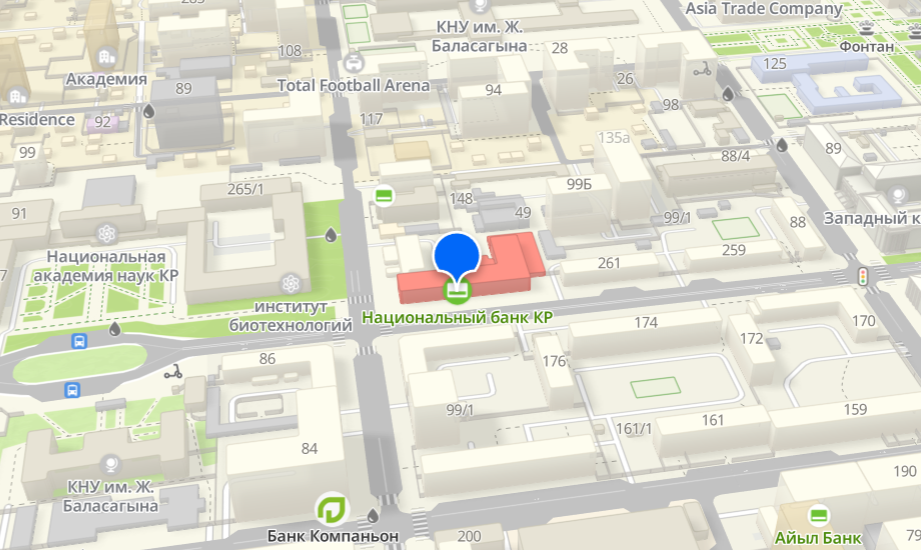
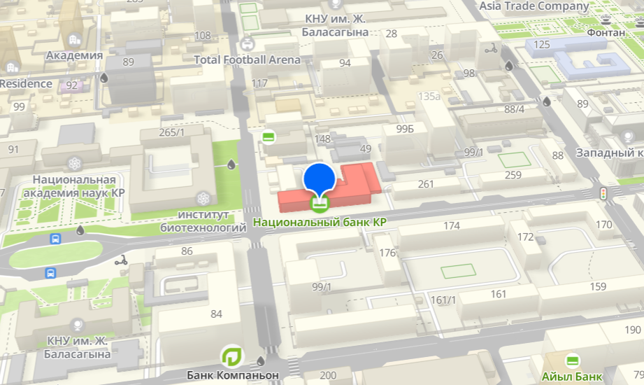

НАЦИОНАЛЬНЫЙ БАНК
КЫРГЫЗСКОЙ РЕСПУБЛИКИ
История Национального Банка КР
Национальный банк Кыргызской Республики был создан в 1992 году после обретения страной независимости. Он стал правопреемником Госбанка Республики Киргизия, ранее входившего в структуру Центрального банка СССР. В 1993 году была введена национальная валюта — сом. С тех пор банк выпустил несколько серий банкнот и монет, сыграв ключевую роль в стабилизации экономики страны. В 2018 году банк отметил 25-летие выпуска национальной валюты и утвердил официальный символ сома — букву «С» с чертой внизу, символизирующую стабильность.
 

Ленинский район, ул. Уметалиева,101
Цели, задачи и функции
Статус, полномочия и деятельность Национального банка определены Конституцией Кыргызской Республики и Конституционным Законом «О Национальном банке Кыргызской Республики» от 30 июня 2022 года. Главной целью банка является достижение и поддержание ценовой стабильности через проведение эффективной денежно-кредитной политики. Основной задачей является поддержание покупательской способности сома, а также обеспечение надежности банковской и платёжной систем страны. Национальный банк осуществляет свою деятельность независимо от других органов государственной власти.
Основные функции Национального банка:
- Разработка и проведение денежно-кредитной политики.
- Регулирование и надзор за банками и финансово-кредитными учреждениями.
- Проведение единой валютной политики.
- Эмиссия национальной валюты.
- Обеспечение эффективной работы платёжной системы.
- Установление правил для банковских операций, учёта и отчётности.
Правление
Правление Национального банка состоит из семи членов: председателя, трёх заместителей председателя и трёх членов Правления. Правление является коллегиальным органом, члены которого назначаются президентом Кыргызской Республики по представлению председателя Национального банка сроком на семь лет. Состав Правления:
- Председатель: Мелис Тургунбаев
- Заместитель председателя: Азат Козубеков
- Заместитель председателя: Мелс Аттокуров
- Заместитель председателя: Бектур Алиев
- Член Правления: Жылдыз Сулайманбекова
- Член Правления: Улан Жамалидинов
- Член Правления: Канат Темиров